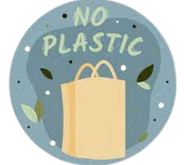
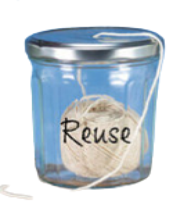
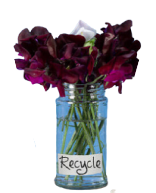

PENGELOLAAN SAMPAH DENGAN PRINSIP 3 R
REDUCE

Mengurangi sampah
dengan cara mengurangi sampah
atau menghemat pemakaian barang.
Misalnya: membawa kantong belanja dan menghindari kantong kresek
REUSE

pemanfaatan ulang
Memanfatkan botol bekas
menjadi perangkap nyamuk (ovitrap),
memanfaatkan kalengf bekas sebagai pot bunga.
RECYCLE

pemanfaatan ulang
Memanfatkan botol bekas
menjadi perangkap nyamuk (ovitrap),
memanfaatkan kaleng bekas sebagai pot bunga.